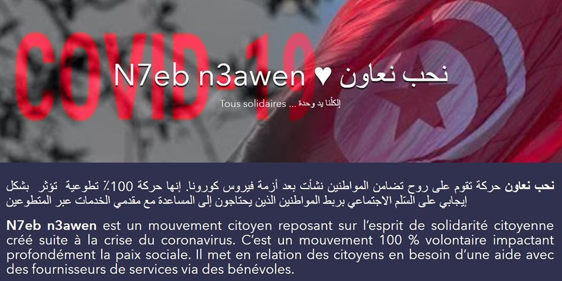

N7EB N3AWEN
.............................
As the pandemic came, everyone was obliged to stay at home. We had full days to spend but we had no activities and we could not go out. In order to adapt to this situation and to fill our time with something useful we decided to start our online “GIS Training” The training consisted of 7 sessions – one session every day – and each session had its goals and introduced us to a new concept. In the end of each day, we had a discussion where we shared what we learned at that day. After completing the GIS Training sessions, we wanted to challenge our GRSS members by launching the ArcGIS Online Challenge. The challenge consisted of an individual or duo work, where participants who have successfully completed the training will create their own web applications using the ArcGIS Online tool. Many interesting apps were created in relation to the covid situation. The winning team used different tools such as ArcGIS Online MapViewer, StoryMap & Dashboard. The selection was made by a jury, who was a Remote Sensing Professor at Sup'Com and a GIS expert. With the arrival of the holy month of Ramadan, the solidarity of Tunisians must be stronger than ever “N7eb n3awen” is a citizen movement based on the spirit of solidarity between Tunisians created following the coronavirus crisis. It is a 100% voluntary movement deeply impacting social peace. It connects citizens in need of help with service providers & traders via volunteers. This platform will be visible at the national level but used above all at the commune level, on the one hand to be able to offer services close to citizens and on the other hand to be able to involve trusted volunteers from the same commune.